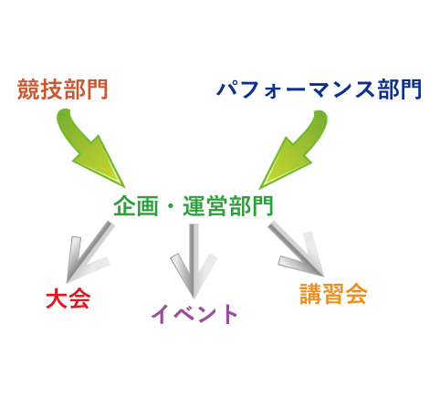
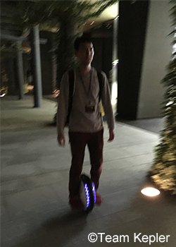

組織
Team Keplerには大きく分けて3つの部門が存在します。
- パフォーマンス部門
- 日本各地のイベントへ赴き、パフォーマーとして活躍する。お客様に楽しんで頂けるような演技をするため、クリエイティブな発想とハイレベルな技術、そしてチームワークが求められる。講習会ではインストラクターとして指導することがある。
- 競技部門
- 主に競技関連の活動に携わり、大会では審判員や記録員として活躍する。パフォーマンス部門同様、講習会ではインストラクターとして指導することがある。また、競技部門では新たな競技を開発することもあり、その際には、安全性の確保はもちろん、競技性の検討やルール作成など、あらゆる業務に当たる。
- 企画・運営部門
- パフォーマンス部門、競技部門から依頼を受け、イベントや大会、講習会の開催を企画・運営する。外部イベントと連携することが多いため、大規模な案件を得意とする。

活動拠点
東京、神奈川、茨城 3つの本部を設置したTeam Kepler。
- 東京本部・新宿
- 各本部・支部へのアクセスが容易な新宿を東京本部に指定。各方面に本部を設置しているが、その中でも東京本部は総本部に当たる。
東京支部：豊洲、大岡山
- 神奈川本部・厚木
- 厚木ならではの立地を活かした最高のロケーションで思う存分活動ができる。神奈川の主要拠点として、神奈川本部に指定された。
- 茨城本部・つくば
- ロボット専用道路がある近未来都市・つくばを茨城本部に指定。次世代の車体を調査するためにも必要不可欠な拠点となっている。
メンバー紹介

- 山口太朗
- 東京本部・代表
- 
- 青山知暉
- 茨城本部・代表

- 河原宙幸
- 神奈川本部・代表

- 星知良
- 神奈川本部

- 半澤幸将
- 東京・豊洲支部

- 涌村武
- 東京・豊洲支部